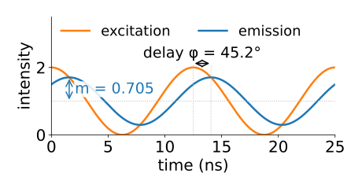
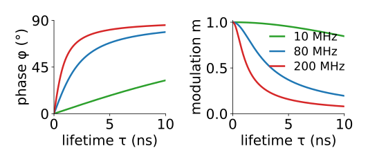
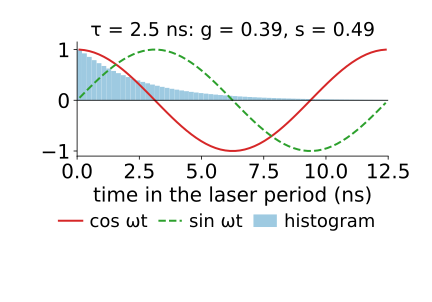
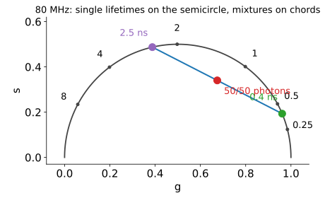
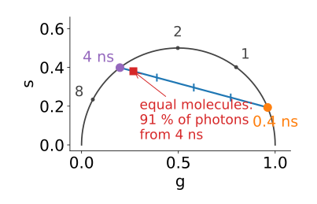
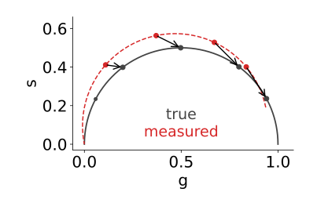
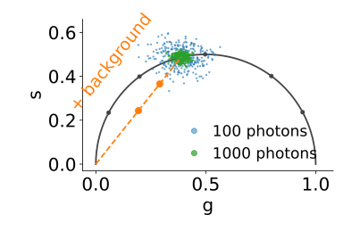

Instead of short pulses, excite with light whose intensity is a wave at frequency f (tens of MHz).
The emission is a wave of the same frequency, but delayed by a phase φ and flattened: its modulation depth m is less than 1.
Why: emission is the excitation smeared by the decay. Light emitted now comes from excitation over the last few nanoseconds, so it lags behind and the peaks and troughs average out.
Longer τ: more delay, more flattening.
Measured with a detector or camera whose gain is modulated at the same frequency, at a few phase steps: a few samples of one wave (recall the Fourier unit: projecting onto a wave).

Why the output is still a wave
Emission = excitation ∗ decay, a convolution. And waves are the eigenvectors of convolution (the Fourier unit’s math slide): convolving a wave with anything gives the same wave, multiplied by one complex number.
That number is the decay’s Fourier coefficient at f.
Its angle is the phase delay φ; its length is the modulation m.
So the decay’s whole effect on a wave of frequency f is captured by two numbers. Different frequencies give different pairs; one is usually enough.
The math: phase and modulation of one exponential
Excitation 1 + \cos\omega t, \omega = 2\pi f. Decay p(t) = \tau^{-1}e^{-t/\tau} (area 1). The emission is
For a mixture, they disagree: \tau_\phi < \tau_m. A free test for “more than one lifetime”, without any fit.
Choice of frequency: best when ωτ ≈ 1 (80 MHz for τ ≈ 2 ns).
Too low: every lifetime gives φ ≈ 0, m ≈ 1, and all decays look alike.
Too high: the emission is flattened to almost nothing (m → 0) and buried in noise.

Try it: excitation and emission waves
The same two numbers from a histogram
A TCSPC histogram covers one laser period T: a periodic signal. Take its first Fourier coefficient at \omega = 2\pi/T (80 MHz for 12.5 ns) and divide by the total count:
g = \frac{\sum_j y_j\cos\omega t_j}{\sum_j y_j}, \qquad s = \frac{\sum_j y_j\sin\omega t_j}{\sum_j y_j}.
The same complex number as the frequency-domain (m\cos\phi, m\sin\phi): time and frequency domain meet in one plot.
One multiply-add per time bin and pixel: no model, no search.
Wrap-around does not hurt: the periodic sum over earlier pulses is exactly the signal a Fourier coefficient at the repetition frequency expects.

The phasor plot
Plot every pixel at (g, s):

Every single exponential lies on the universal semicircle: centre (\tfrac12, 0), radius \tfrac12. Short lifetimes near (1, 0), long ones near the origin.
The lifetime can be read from the position: \tau = s/(g\,\omega).
Points inside the semicircle are not single exponentials.
The math: the phasor of an exponential
P = g + is = \frac{\int_0^\infty e^{-t/\tau}e^{i\omega t}\,dt}{\int_0^\infty e^{-t/\tau}\,dt} = \frac{1}{1 - i\omega\tau} = \frac{1 + i\omega\tau}{1 + \omega^2\tau^2}.
g = \dfrac{1}{1 + \omega^2\tau^2}, s = \dfrac{\omega\tau}{1 + \omega^2\tau^2}, so s/g = \omega\tau and g^2 + s^2 = g, i.e. (g - \tfrac12)^2 + s^2 = \tfrac14: the semicircle.
Sign: the Fourier unit’s c_k = \int f\,e^{-2\pi ikt}dt uses e^{-i\omega t}, so P = \overline{c_1}/c_0; the phasor plot draws s upwards.
Discrete: P = \sum_j y_j e^{i\omega t_j}/\sum_j y_j is the conjugate of DFT bin 1 over bin 0 (with t_j at bin centres).
Mixtures lie on straight lines
The phasor is linear in the decay and normalised by the intensity. So a pixel holding two species lies on the straight line (chord) between their two semicircle points.
Its position on the chord is the photon fraction (lever rule): 70 % of the photons from species B → 70 % of the way from A to B.
Photon fraction is not molecule fraction: a long-lived species gives more photons per molecule. Equal molecules of 0.4 and 4 ns: 91 % of the photons come from the long one.
Many pixels with the same two species in varying amounts: a cloud along a line. Extend it to the semicircle: both lifetimes, without any fit.
Three species fill a triangle; the fractions are barycentric coordinates (the simplex of endmembers, in a fixed 2D projection).

The math: linearity
Decay I = \sum_k I_k with integrals N_k = \int I_k, N = \sum_k N_k:
Weights f_k \ge 0 summing to 1: a convex combination (segment, triangle).
With amplitudes \alpha_k: N_k \propto \alpha_k\tau_k, so f_k = \alpha_k\tau_k/\sum_j\alpha_j\tau_j.
For a mixture, P lies inside the circle; \tau_\phi = s/(g\omega) and \tau_m then differ (\tau_\phi < \tau_m for any two-component mixture: exercise).
Try it: the phasor plot
Calibration: removing the IRF
Convolution with the IRF multiplies the phasor by the IRF’s phasor: a rotation (the IRF’s delay) and a shrink (its width). Coarse time bins do something similar.
Measure a reference of known lifetime (or the IRF itself) with the same settings.
One complex correction factor for the whole image: P_\text{true} = P_\text{measured} \times P_\text{reference, true}/P_\text{reference, measured}.
This is deconvolution, but at a single low frequency, where the IRF’s response is close to 1: nothing explodes. Contrast the inverse filter, which divides by responses near 0 at high frequencies.

The math: convolution multiplies phasors
For normalised h (IRF) and I (decay), by the convolution theorem at one frequency:
Calibration with a reference of lifetime \tau_r: P_h = P_{\text{ref,meas}}/P_{\tau_r}, so P_I = P_\text{meas}\,P_{\tau_r}/P_\text{ref,meas}. In polar form: subtract the phase error, divide by the modulation error.
Example: a 4.0 ns reference should give φ = 63.6°, m = 0.445 at 80 MHz but gives 70°, 0.40. A sample measured at 50°, 0.60 is really at 43.6°, 0.668.
Binning: integrating over bins of width Δt multiplies P by \mathrm{sinc}(\omega\Delta t/2) (and sampling at bin centres folds in higher harmonics): a known factor, removed by the same calibration.
Noise and background
With N photons a pixel’s phasor scatters around the true point; the spread per coordinate is roughly \tfrac12/\sqrt N (5 % of the plot at 100 photons).
Dim pixels scatter widely; flat background has phasor (0, 0), so it pulls points towards the origin along a straight line (a mixture with “background”).
Median-filter the g and s images (recall denoising): the cloud tightens while the intensity image stays sharp.
Reciprocity: select a region on the phasor plot (a cursor), and its pixels light up in the image; paint a region in the image, and its pixels light up on the plot.
Species whose first-harmonic phasors coincide can separate at the second harmonic (2ω).

Try it: a cell on the phasor plot
Summary
Frequency-domain FLIM: modulated excitation gives an emission wave with a phase delay φ and a modulation m; \tan\phi = \omega\tau, m = 1/\sqrt{1 + \omega^2\tau^2}. \tau_\phi < \tau_m flags a mixture.
The phasor(g, s) = (m\cos\phi, m\sin\phi) is the normalised first Fourier coefficient of the decay: computed from a TCSPC histogram in one pass, no model.
Single exponentials lie on the universal semicircle; mixtures on chords at their photon fractions; three species fill a triangle.
The IRF multiplies phasors: calibration with a reference is one complex division, a safe deconvolution at one frequency.
Noise spreads the cloud as 1/\sqrt N; background pulls it to the origin; median filtering of g, s helps.
The same transform on a spectrum gives a spectral phasor, an alternative to the least squares of the unmixing day (not covered there).